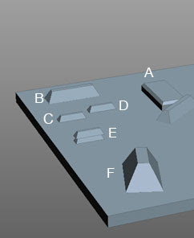
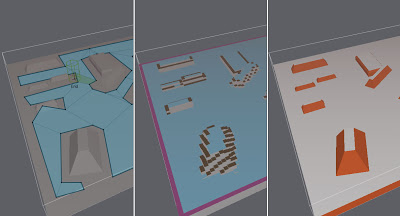
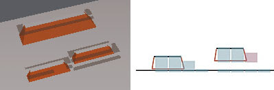
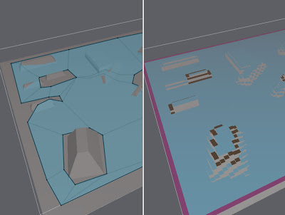
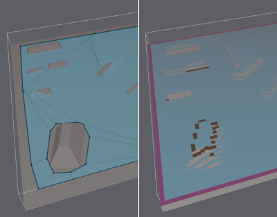
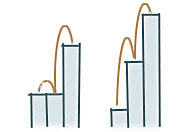
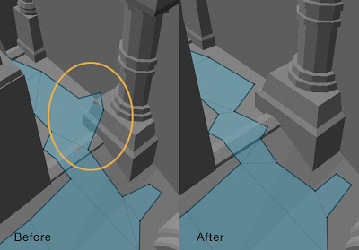

序
本文根据 Sample_SoloMesh::handleBuild 中的 Step 3. Filter walkables surfaces 进行源码解析。
前面 Recast 将三角形表面根据坡度进行了可行走性的标记，并将三角形进行了光栅化，转换后的 solid span 也继承了三角形的可行走标记。而这一流程将进一步对这些 span 进行可行走性的筛选和过滤。过滤方式有三个：
rcFilterLowHangingWalkableObstacles: 如果一个 span 不可行走，但是其下方 span 可以行走，且两个 span 的顶部高度差在 walkableClimb 以内，则将上方的 span 标记为可以行走。rcFilterLedgeSpans: 将与邻接 span 超过一定高度差的 span 标记为不可行走。rcFilterWalkableLowHeightSpans: 将不满足可行走高度空间的 span 标记为不可行走。
rcFilterLowHangingWalkableObstacles
这个函数的逻辑比较简单，就是遍历所有的格子，如果在同一个格子内、当前 span 不可行走，但是其正下方第一个距离 walkableClimb 以内的 span 可以行走，则将当前 span 也标记为可以行走。
那什么情况下需要用到这个处理呢？
根据函数名 “low hanging” 可以认为，其主要目的是将一些悬空但是离可行走表面比较近（walkableClimb 以内）的模型表面标记为可以行走。但是如果模型平面符合坡度要求，那么模型本来就应该是可以行走的。所以这个函数要处理的应该是由陡坡斜面体素化而来的不可行走的 span。可以想象，如果一个 span 的高度离可行走表面的距离在 walkableClimb 以内，那么不管它的坡度有多陡峭，寻路实体应该都是需要能走上去的。
库作者 Mikko 在他的一篇博客 Rough Fringes（需梯子）里解释了添加 rcFilterLowHangingWalkableObstacles 的原因，摘录并翻译如下：
现在有一个 bug 时不时地就会出现，修起来又很烦。问题出在输入的部分模型有着既短又陡的斜面，通常是陡坡或者一些装饰性的模型。但是这些多边形会在边附近产生几个体素大小的洞，而这些洞又会导致最终生成的导航网格上出现洞。这就是在特定情况下由三角形的保守体素化算法产生的过度保守的结果。
…
我做了些测试来凸显出这个问题。下图 F 以外所有障碍的高度都允许寻路实体通过（在 walkableClimb 内）。障碍 A 是个边缘陡峭的简单盒体。B 到 E 的形状都相同，其中 B 的大小是其它障碍的两倍，C 贴在地上，D 悬浮在地上但是高度很低，依旧允许寻路实体通过，E 则是个两个障碍叠在了一起。

下面左边的图就是生成的网格，看上去就不太好。中间和右边两张图片分别是体素和输入模型三角形的图片。红色的三角形代表其坡度太陡（大于 walkableSlopeAngle），暗红色体素代表不能行走的区域。

拉近点儿看看这三个障碍。问题在于在体素化的过程中，一部分体素因为其所属多边形太陡峭而被标记为不可行走。

现在已经有代码来尝试处理这种情况：如果一个不可行走区域离一个可行走区域实在是特别近，那就将其标记为可以行走。所以上述问题解决办法的第一步就是将其扩展一下（译注：已有代码指的是 addSpan 时对垂直方向上 span 的合并流程，之前 flagMergeThr 是固定的 1。这里
rasterizeTri与addSpan新增了参数flagMergeThr，见 commit@9bf6821）。之前的阈值为了表示足够近，使用的是一个体素的值，现在我们可以将其扩展到寻路实体的步高（walkableClimb）。修改后生成的网格如下：

这样就好多了，部分错误已经完全被修正，但是不直接与可行走地面相连的障碍处理依旧有问题。所以下一步就要遍历所有的体素，如果它的下方有可行走的体素，就检查两者上表面的高度差是否在寻路实体最大步高内。这样基本上就修正了剩下的其它问题。这个筛选可以调用
rcFilterLowHangingWalkableObstacles来进行。
rcFilterLedgeSpans
Ledge 的定义是：一个 span 与其四方向里任一邻接 span 上表面的高度差的绝对值大于 walkableClimb。从定义可以看出，ledge 就是高度与周围环境发生较大变化的 span。
开启 rcFilterLedgeSpans 后生成的 walkable voxels：

关闭 rcFilterLedgeSpans 后生成的 walkable voxels：

可以看到两个特点：
rcFilterLedgeSpans决定了高度巨变的边缘处是否要留出不可行走区域；- 较大高度差的两个相邻 span，总是将较高的那个标记为不可行走（这点从源码里
if (minh < -walkableClimb)的判断也可以看出）；
但是 rcFilterLedgeSpans 中除了对 ledge 的处理外，还有个 else if ((asmax - asmin) > walkableClimb) 的判断。其中 asmax 和 asmin 分别是当前 span 四方向邻接 span 里的最大、最小高度坐标。所以这里的意思是当一个 span 四方向里高度差变化大于了 walkableClimb 时，也需要将该 span 标记为不可行走。
Mikko 在 Rough Fringes（需梯子）里有继续解释：
在一些特定情况下，这个流程（指 rcFilterLowHangingWalkableObstacles）可能会产生过度优化的结果。不过就算没有这些新加的步骤，步高的检查依旧会产生一些不理想的情况。导致这个问题的原因就是因为步高的检查只在邻接 span 里进行。

如果现在有很多相邻的体素，其两两之间高度差都是一个较大的步高，那上面的算法就会导致寻路实体能在这些陡坡上移动。而如果这些 span 来自于坡度很高的多边形，那这些邻接 span 本应该被标记为不可移动。
所以我又为此增加了一个修正措施。方法就是在
rcFilterLedgeSpans里新增了一段逻辑（译注：asmin、asmax 相关的逻辑），如果一个体素在相对的方向上有邻接 span 同时要求较大步高的情况，那么将其标记为不可行走（译注：这个说法和代码里的逻辑不太一样，代码里并没有针对方向做处理，任意两个方向均可）。因为遍历高度场的邻接关系比较耗性能，所以我直接将这段逻辑加在了一个已有遍历邻接 span 逻辑的函数里。下图是测试结果。左图中在边中间部位圈出的角之所以会形成，是因为角色在上面的位置可以站的比坡下的位置离柱子底座更近，而坡下的位置底座部分已经成为了一堵墙。

因为 rcFilterLedgeSpans 会将连续大步高的倾斜面 span 标记为不可行走，而 rcFilterLowHangingWalkableObstacles 可能会将符合条件的包括 ledge 和大步高倾斜面在内的 span 标记为可以行走，所以 rcFilterLedgeSpans 一定要在放在其后进行调用。
rcFilterWalkableLowHeightSpans
这个函数就是为了剔除掉两块可行走空间的通过高度不够的地方。

假设 walkableHeight 为 2，那么 H1 满足要求，H2 不满要求，则需要将右方的 span 标记为不可行走。